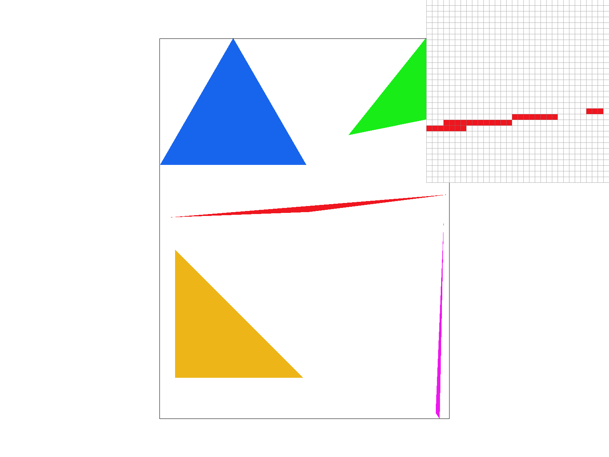
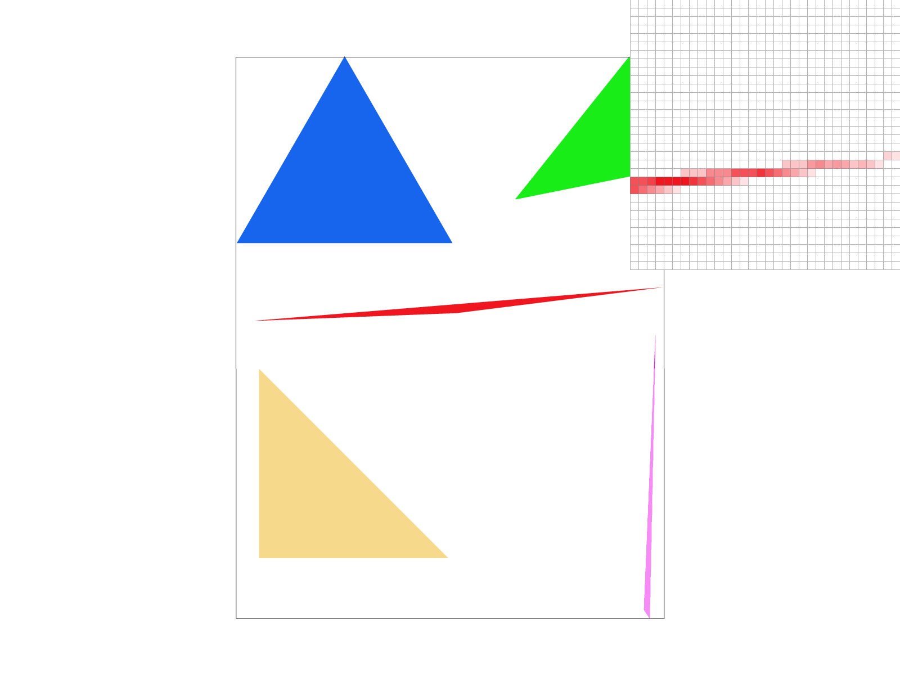
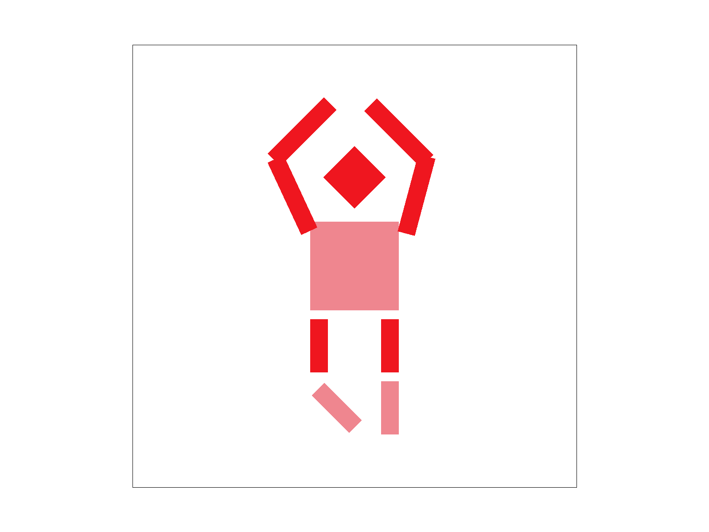
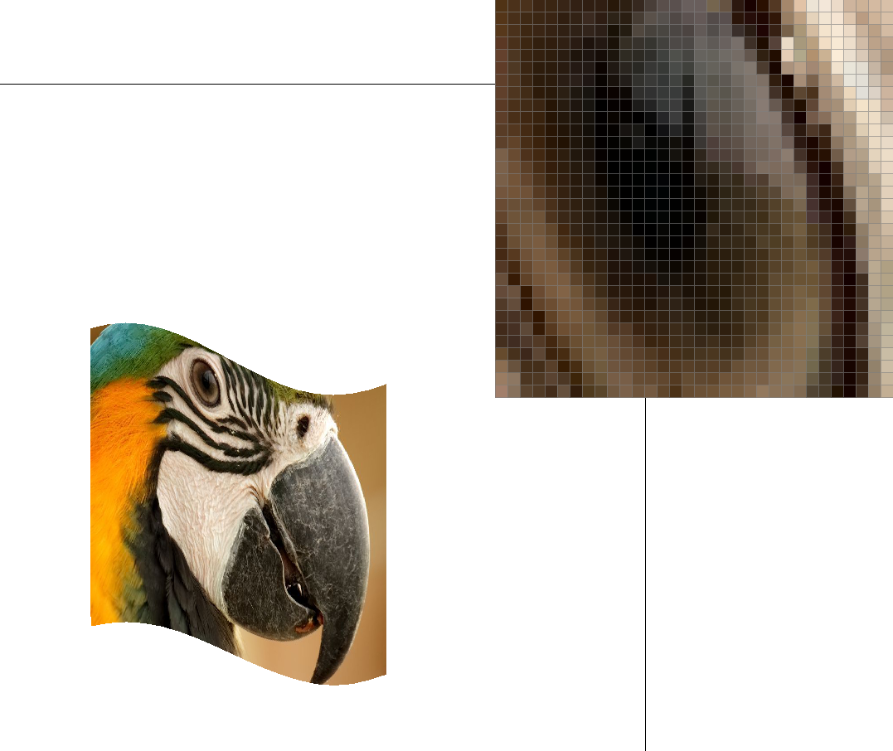
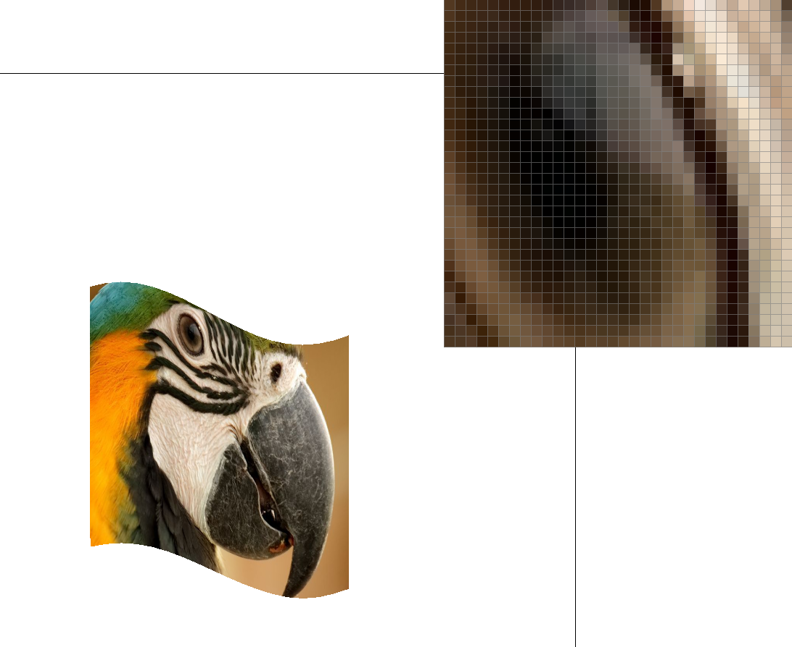

Overview
TODO:Give a high-level overview of what you implemented in this project. Think about what you've built as a whole. Share your thoughts on what interesting things you've learned from completing the project.
Section I: Rasterization
Part 1: Rasterizing single-color triangles
We want to draw ("rasterize") a triangle, which has an absolute shape, over a frame buffer that contains a set of pixels. We need to change the color of the pixels where the triangle will be to the color of the triangle, but we need to first figure out which pixels to update. We loop over each pixel in the area of the triangle and perform three "line tests" for each edge of the triangle in clockwise or counter-clockwise order to see if the pixel is inside the triangle. The pixel is inside if for every line, the dot product of the normal vector to that line and the vector pointing to the pixel from the first point on the line is less than zero (or greater than zero for counter-clockwise order). If the pixel center is inside the triangle, we set the color to the triangle's color and continue for the rest of the pixels.
Rather than checking each pixel in the drawing area, my algorithm first determines the minimum and maximum x- and y- values of each of the triangle's vertices and creates a bounding box accordingly. Then the algorithm only loops over the pixels in this bounding box.
Here is an example 2x2 gridlike structure using an HTML table. Each tr is a row and each td is a column in that row. You might find this useful for framing and showing your result images in an organized fashion.
Part 2: Antialiasing triangles
To perform supersampling I used the sample_buffer 1D vector to store the 2D drawing area for rasterization. For a given sample_rate, the size of the drawing area would be width * height * sample_rate, where width and height are the dimensions of the final framebuffer that the GUI displays. To access the subpixels in sample_buffer of a pixel (x, y) in the framebuffer image, I index sample_buffer by x * sqrt(sample_rate) * width + y * sqrt(sample_rate), which is the first subpixel of the kernel of subpixels of size sqrt(sample_rate) * sqrt(sample_rate) .
The algorithm involves: (1) initializing the sample_buffer according to the sample_rate; (2) rasterizing each triangle as in Task 1, only this time the bounding box has sample_rate times more pixels to perform the line tests on; (3) rasterizing the lines and points by simply filling each subpixel with the same color so that they look as they did in Task 1; (4) finally "resolving" the rasterized image to the framebuffer by averaging the colors from each set of subpixels in the sample_buffer and setting the corresponding pixel in the framebuffer to the average color (otherwise known as "downsampling").
The modifications I had to make to the rasterization pipeline in Task 1 were mainly updating rasterize_triangle so that the bounding box of each triangle and the triangle points for the line tests scaled to the new size of the sample_buffer, and changing resolve_to_framebuffer to implement downsampling (before, it simply indexed from sample_buffer is if the framebuffer had the same dimensions). Minor fixes included changing the fill_pixel function to loop over each subpixel in the sample_buffer and set each to the same color in the case of point or line rasterization.
Before this step, my triangles had lots of "jaggies" and floating points (see the above image) as a result of aliasing. I could antialias my triangles with supersampling, since this process involves breaking down each pixel into sample_rate subpixels and performing the line test over each, which smoothes out some of the coarser "jaggies." Then, by downsampling from the sample_buffer using the average color of the subpixels, the pixels become gradually lighter at the edges of the triangle, resulting in a smooth edge as opposed to floating points:
|

|
|

|
In the images above, we can see that in the sample_rate = 1 image, there are clear "jaggies" and a large gap followed by floating pixels when we expect a smoother point. This is due to aliasing; there are actually subpixels in that gap that would pass the line test which are being excluded from the final image. As we increase the sample_rate this point is smoothed out thanks to the supersampling following by averaging the subpixels of each pixel. By the rightmost image, the point of the triangle is much smoother.
Part 3: Transforms

|

|
My cubeman has their hands up in a pirouette pose! I adjusted the rotation of the arm and leg segments and translated each to compensate for the offset caused by rotation. I also scaled the arm length to allow the arms to reach all the way over the head.
Section II: Sampling
Part 4: Barycentric coordinates
Barycentric coordinates are based on the prortion of the distance between a point and a set of points defining a simplex, like a triangle. These proportions can be treated as weights associated with an attribute at each vetex, e.g. a colors or mass. For example, the triangle below uses barycentric coordinates to calculate the color value of each pixel in a triangle based on their distance to each of the red, green and blue vertices. The result is a smooth gradient of color across the triangle:

Part 5: "Pixel sampling" for texture mapping
Pixel sampling involves computing coordinates u, v in a continuous space for a point at x, y in the "screen space," and drawing the value from u, v at the point x, y. For texture mapping, we want to perform this operation by mapping a set of pixels ("texels") from triangles in a texture image onto the set of pixels from the corresponding triangles in the screen space. Because the pixels lay in correpsonding triangles, I used barycentric coordinates based on the vertices of the triangles in the screen and texture spaces, to find the texel coordinates u, v corrsponding to the screen pixel at x, y.
It is often the case, however, that u, v don't align exactly with coordinates in the texture space. For this reason, we can use one of two sampling methods. Nearest sampling simply takes the texel closest to u, v by rounding those coordinates. Bilinear sampling involves finding the nearest 4 texels surrounding u, v and computing the distances between u, v and the four closest coordinates offset by 0.5 (to get the center of the texels). The distances are used to calculate how much each texel contributes to the final pixel value as a weighted average.
|

|

|
The image using bilinear sampling has much smoother transitions and does not contain as many artifacts. This is because nearest sampling simply uses the closest color value it can find for each pixel from the texture image without compensating for the fact that the nearest color value in the texture image does not quite correspond with the true coordinate location sampled. In bilinear sampling, the final color taken from the texture image is adjusted to compensate for this offset, making the resulting image drawn on the screen space much smoother.